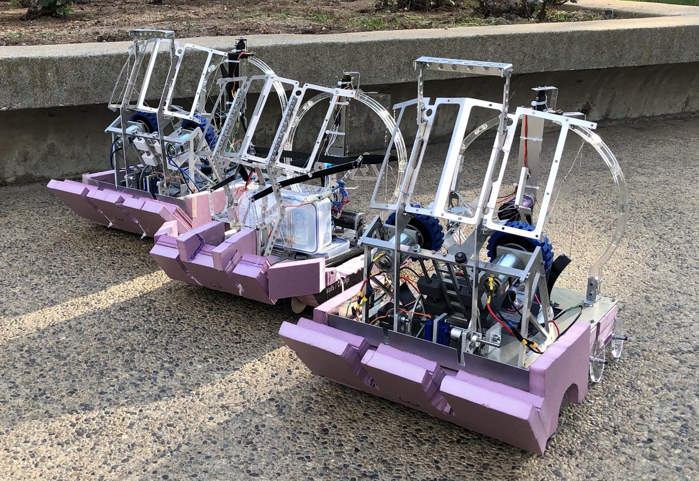
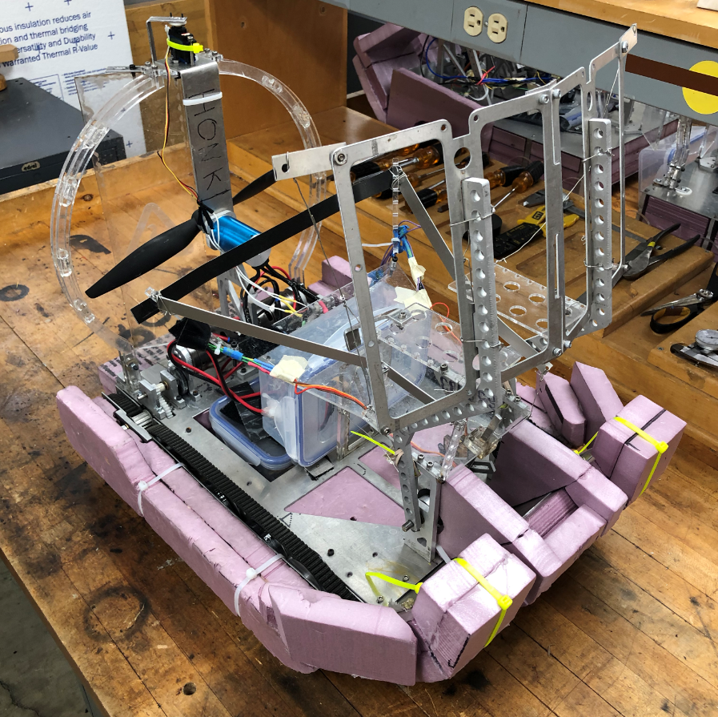
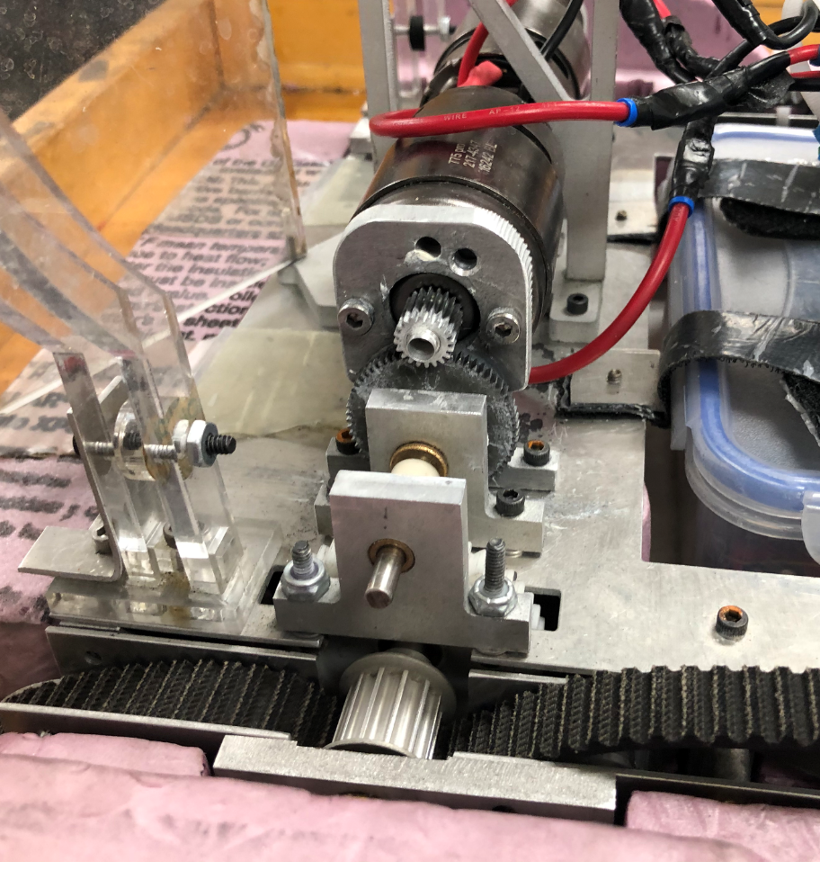
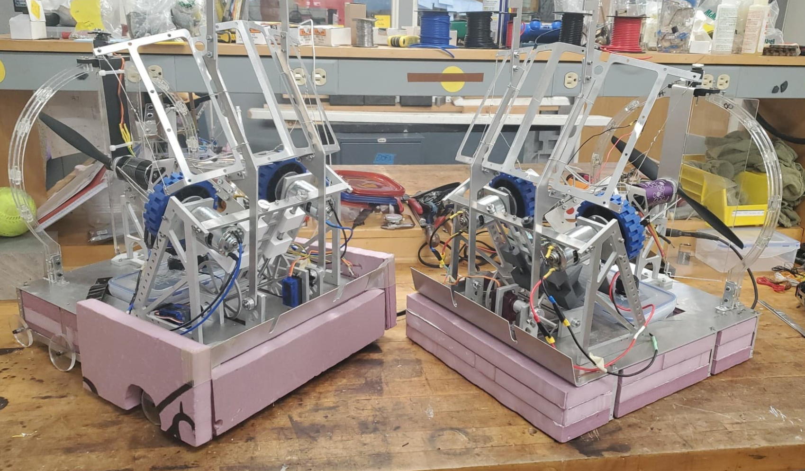
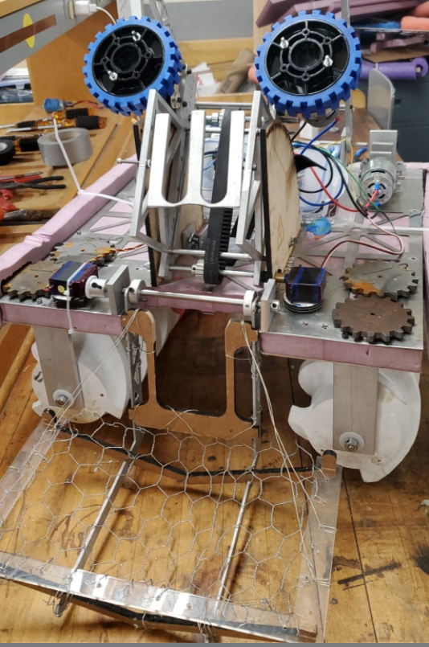
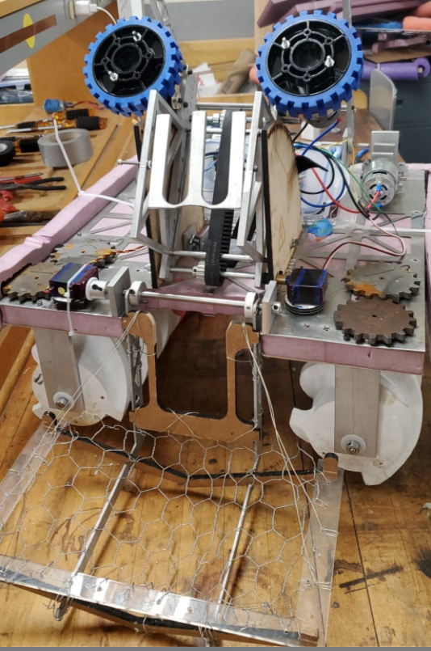

|
The ME72 Engineering Design Competition is Caltech's mechanical engineering capstone course. For the 2020 competition, five teams of five designed, constructed and iterated on three amphibious RC robots over the course of two terms (6 months). To build these robots, each team was given $1400 and access Caltech's machine shop, where we made extensive use of laser cutters, 3D printers, waterjets, manual mills, lathes and bandsaws. The course finale was a round-robin tournament, where we placed second due to mechanical difficulties. Despite that disappointment, I (and many of my teammates) were selected to TA the 2021 competition.
The main objective of the competition was to collect foam softballs and deposit them into two different types of goals. The central goal was located on a spinning platform, necessitating a robot capable of transitioning from water to land and back. The second type of goal was elevated off of the surface of the water, creating the need for balls to be lifted or shot. To this end, we built three robots - Goose, Bell, and Rake. Goose was unique, while Bell and Rake were identical. However, each shared a common electrical system (3S Lipo battery for power, wireless control via Playstation controllers, onboard computing via an Arduino Mega), similar ball accumulation mechanisms, fan propulsion systems and chassis, and waterproofing techniques. Sharing subsystems between robots was crucial for maxmizing the benefits of iterating on our designs. |
 Left to Right: Bell, Goose and Rake
|
|
Goose was designed to score in the central land goal. As such, it has two methods of propulsion - a pair of tank treads and a fan. The treads are simply a repurposed timing belt, keeping costs low. They are driven by a pair of brushed DC motors, from which we had consistent torque issues. These issues were mostly solved by adding a stage to our geared transmission, reducing the number of tight turns the belt made, and properly tensioning the belt.
The fan was much easier to get working. The large brushless motor directly driving the 12" propeller had much fewer potential points of failure, as well as providing excessive amounts of thrust. The large rudder behind the fan also gave Goose excellent turning performance, to the point it could almost turn in place. The main issue with the fan was its high mounting point. If the robot was driven too fast the moment created by the fan's height caused the robot to pitch forward and eventually sink. This was mitigated by adding more floatation and a bow to the front of the robot. The fan's success on Goose influenced us to switch the propulsion system on Bell and Rake from an archimedes screw to fans as well. Goose could accumulate softballs from out of the water using its servo-driven scoop, and used a linkage to dispense balls one at a time into the central land goal. |
 Goose's Final Form  Goose's Two-Stage Tread Transmission
|
|
Bell and Rake were designed to shoot softballs into the elevated goals. As such, they only needed to spend time in the water, and used an exact copy of Goose's propulsion fan system. They also featured a similar ball accumulation scooping mechanism. The robots used a pair of flywheels to shoot the softballs into the elevated goals. To maximize the consistancy of shots, the balls where pushed into the flywheels using a sled system.
Our original plan for Bell and Rake was to use a pair chain-driven archimedes screws for propulsion. We thought that the ability to turn in place would be valuable for ball accumulation and lining up shots on goal. The screws were 3D-printed and filled with expanding foam. However, after building the original Rake, we found the system proved finicky, heavy and slow. After the success of Goose's fan propulsion, we decided to redesign Bell around a similar chassis and propulsion system, leaving us with three unique robots. With these improvements Bell vastly outperformed Rake, to the point that we decided 11 days before the competition to rebuild Rake as an identical copy of Bell. The risk paid off - the new Rake was operational and ready for competition a week later. |
 Bell (Left) and Rake (Right, in progress).
Shooter Ball Sled (Left), "Old" Rake Featuring Archimedes Screws (Right) |
 
